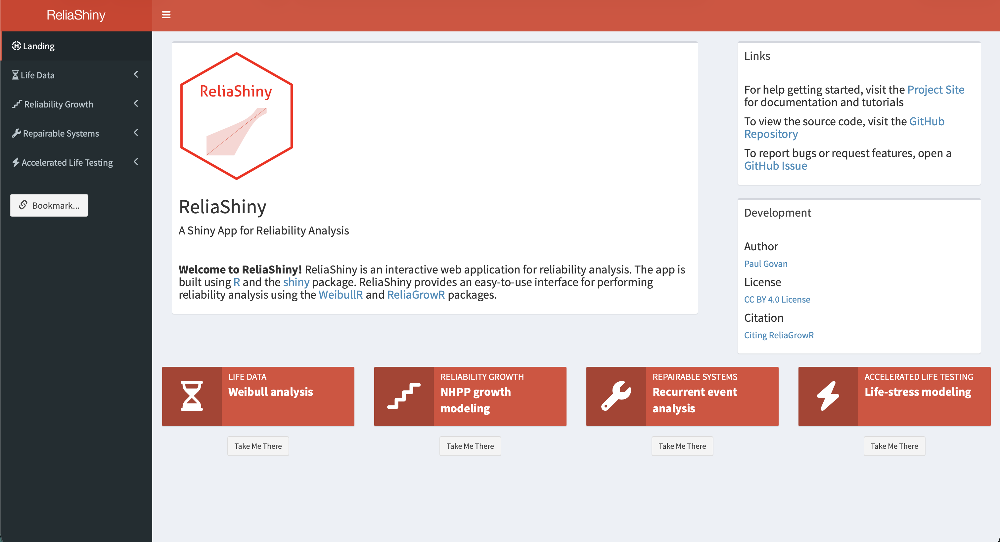
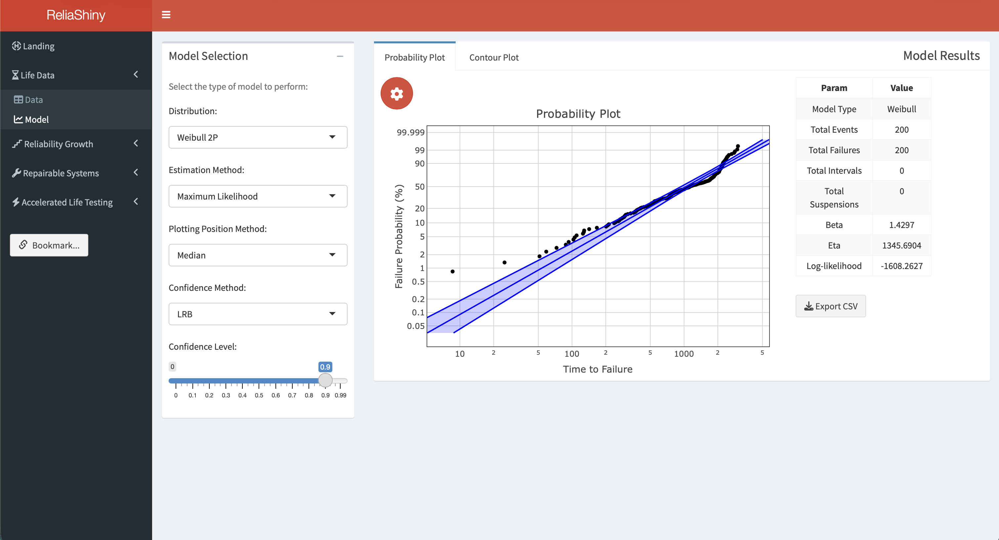
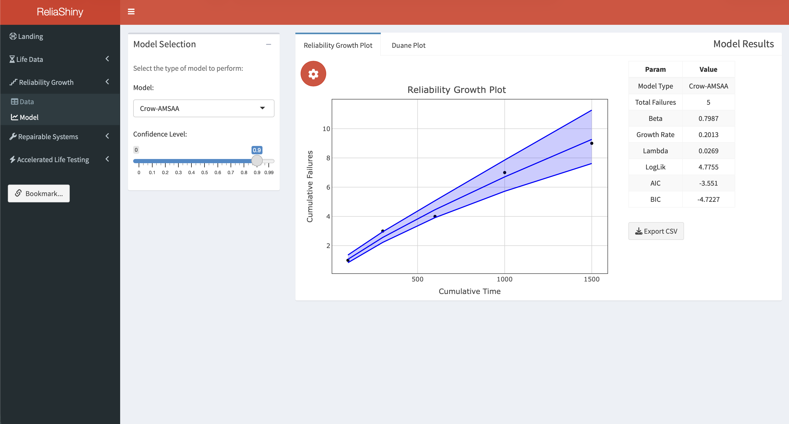
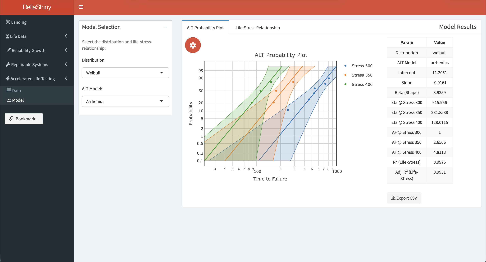
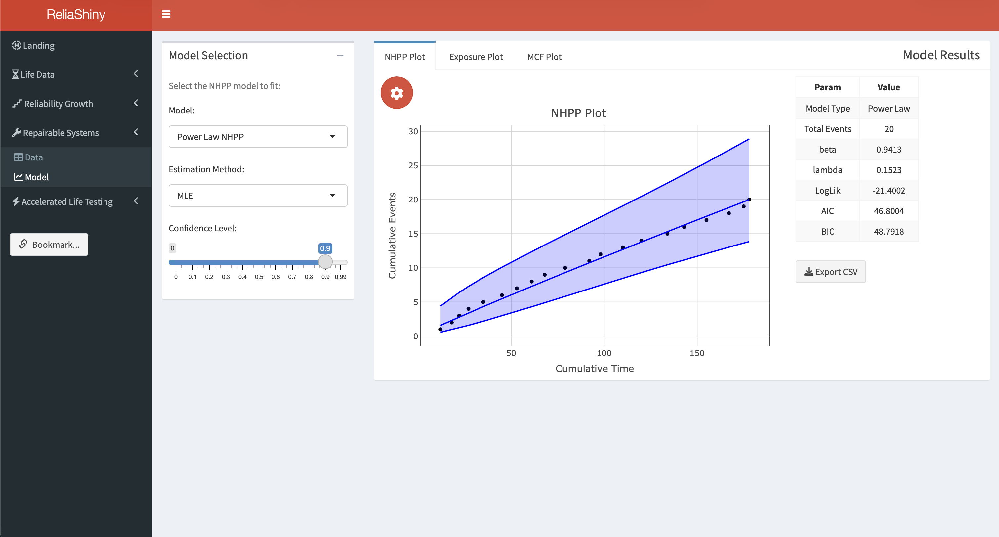

install.packages("ReliaShiny")8 Web-Based Analysis with ReliaShiny
8.1 Introduction
All of the analyses in this book require writing R code. ReliaShiny (Govan 2023) removes that requirement — it is a point-and-click Shiny (Chang et al. 2022) web application that exposes the same reliability analysis workflows (RAM, life data analysis, reliability testing, repairable systems, reliability block diagrams) through a graphical interface. No R programming knowledge is needed to run an analysis.
This chapter introduces ReliaShiny, tours its modules, and explains when to reach for it versus a scripted R workflow.
8.2 Installation and Launch
ReliaShiny is available on CRAN:
Once installed, launch the app from the R console:
library(ReliaShiny)
ReliaShiny()This opens the application in your default web browser. The app runs locally — no internet connection or account is required.
8.3 App Overview
When ReliaShiny opens, the left sidebar displays the available analysis modules, each corresponding to a chapter in this book:

| Module | Corresponding chapter | Key capabilities |
|---|---|---|
| RAM | Chapter 1 | Reliability, availability, MTTF, MTBF, failure rate |
| Life Data Analysis | Chapter 3 | 2-parameter, 3-parameter Weibull, Weibayes; MRR and MLE; right-censored data |
| Reliability Growth | Chapter 4 | Duane and Crow-AMSAA model fitting; piecewise NHPP |
| Accelerated Life Testing | Chapter 5 | Arrhenius and Power Law models; relationship plots |
| Repairable Systems | Chapter 6 | Power Law Process (NHPP); MCF; fleet exposure |
| Reliability Block Diagrams | Chapter 2 | Series, parallel, mixed, and k-out-of-n configurations |
Each module follows the same three-step workflow:
- Input — enter or upload your data using form fields, tables, or file uploads.
- Analyze — click Run to fit the model.
- Output — view plots, parameter estimates, and summary statistics; download results.
8.4 Module Walkthroughs
RAM Module
The RAM module computes reliability, availability, MTTR, MTTF, MTBF, and failure rate from summary inputs.
Workflow:
- Select the RAM tab in the sidebar.
- Enter the total time, failed time, and (for availability) scheduled maintenance time.
- Click Calculate.
- The panel displays all five metrics: Reliability, Availability, MTTR, MTTF, MTBF, and Failure Rate.
This mirrors the rel(), avail(), mttf(), mtbf(), and fr() helper functions from Chapter 1.
Life Data Analysis Module
The LDA module fits Weibull models and generates probability plots.

Workflow:
- Select the Life Data Analysis tab.
- Upload data — paste failure times into the input table, or upload a CSV with columns
timeandevent(1 = failure, 0 = suspension). - Choose model — 2-parameter Weibull (default), 3-parameter Weibull, or Weibayes.
- Choose estimation method — MRR or MLE.
- Click Fit Model.
- The probability plot appears in the main panel, with \(\hat{\beta}\), \(\hat{\eta}\), and the Anderson-Darling statistic in the sidebar.
- Click Download Plot to save the chart as a PNG.
CSV format for upload:
time,event
30,1
49,1
82,1
90,1
96,1
100,0
45,0
10,0A 0 in the event column marks a suspension (right-censored observation).
Reliability Growth Module
The Reliability Growth module fits Duane and Crow-AMSAA reliability growth models.

Workflow:
- Select Reliability Growth.
- Enter cumulative test times and failure counts in the data table.
- Choose Duane or Crow-AMSAA model.
- Click Fit.
- The plot shows the fitted model; \(\hat{\beta}\) and model parameters appear in the results panel.
Accelerated Life Testing Module
The ALT module fits Arrhenius and Power Law acceleration models using the WeibullR.ALT package (see Chapter 5).

Workflow:
- Select Accelerated Life Testing.
- Upload a dataset with columns
time,event,qty, and a stress column (e.g.,TempCorVoltage). - Choose the acceleration model: Arrhenius (temperature) or Power Law (mechanical/voltage stress).
- Click Fit ALT Model.
- The probability plot and relationship plot are displayed, along with fitted parameters and the computed Acceleration Factor.
Repairable Systems Module
The Repairable Systems module fits the Power Law Process (Crow-AMSAA) and computes the MCF for fleet data.

Workflow:
- Select Repairable Systems.
- Upload fleet data with columns
id,time, andevent. - Choose analysis type: NHPP (Power Law) or MCF.
- Optionally enter a breakpoint for piecewise NHPP fitting.
- Click Analyze.
- The cumulative failures plot (NHPP) or MCF curve is displayed, with estimated parameters.
Example CSV format:
id,time,event
1,310,1
1,850,1
1,1620,1
2,420,1
2,1050,1
2,3000,0The last row for system 2 (event = 0) indicates that system 2 was observed until hour 3,000 without a third failure.
Reliability Block Diagrams Module
The RBD module computes system reliability from component reliabilities for series, parallel, mixed, and k-out-of-n configurations.
Workflow:
- Select Reliability Block Diagrams.
- Choose the system topology from the dropdown: Series, Parallel, Mixed, or k-out-of-n.
- Enter the number of components and their individual reliabilities.
- For Mixed systems, define subsystem groupings.
- For k-out-of-n systems, enter \(k\) (minimum required) and \(n\) (total).
- Click Calculate.
- System reliability and, for exponential components, system MTTF are displayed.
- A block diagram graphic is shown for Series and Parallel configurations.
8.5 Data Upload Tips
- CSV files: core column names (
time,event,id,qty) are case-sensitive and must be lowercase. Stress column names (e.g.,TempC,Voltage) may use any valid R name — they are selected in the app’s dropdown. - Missing values: rows with
NAin thetimecolumn are automatically excluded. - Large datasets: the app handles datasets up to ~10,000 rows without performance issues.
- Units: ReliaShiny is unit-agnostic — use hours, years, cycles, or any consistent unit. Label your outputs accordingly.
8.6 Downloading Results
Every module provides download buttons for:
- Plot PNG — the current chart at screen resolution.
- Results CSV — parameter estimates and summary statistics in tabular form.
- Report HTML — a self-contained report combining the inputs, plot, and results (available in LDA and RT modules).
8.7 When to Use ReliaShiny vs Scripted R
| Situation | ReliaShiny | Scripted R |
|---|---|---|
| Quick one-off analysis | ✅ | |
| Teaching / demonstration | ✅ | |
| Sharing with non-R users | ✅ | |
| Automating repeated analyses | ✅ | |
| Custom plots and formatting | ✅ | |
| Reproducible research / version control | ✅ | |
| Embedding results in a Quarto book | ✅ | |
| Large batch processing | ✅ |
ReliaShiny excels at rapid exploration, prototyping, and sharing results with stakeholders who do not use R. For production workflows, automated pipelines, and fully reproducible analyses, scripted R with the underlying packages (WeibullR, ReliaGrowR, WeibullR.ALT) gives more control.
8.8 Getting Help
Within the app, click the ? icon on any panel for a tooltip explaining the inputs and outputs for that module.
From R:
help(package = "ReliaShiny")Additional resources:
8.9 Summary
ReliaShiny provides a point-and-click interface to the full ReliaLearnR analysis ecosystem — RAM, life data analysis, reliability testing, repairable systems, and reliability block diagrams — with no R coding required. Install it with install.packages("ReliaShiny") and launch it with ReliaShiny(). Use it for rapid exploration, stakeholder demonstrations, and sharing results; switch to scripted R for reproducibility, automation, and custom outputs.
Chang, Winston, Joe Cheng, JJ Allaire, et al. 2022. Shiny: Web Application Framework for r. https://doi.org/10.32614/CRAN.package.shiny.
Govan, Paul. 2023. ReliaShiny: A ’Shiny’ App for Reliability Analysis. https://doi.org/10.32614/CRAN.package.ReliaShiny.